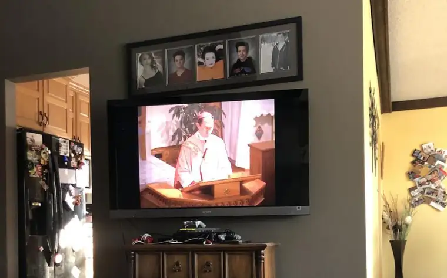

All week, I’d been seeking online prayer to spiritually survive the week in this closed-in pandemic situation.
Joining a weekday, online evening prayer offering from Baton Rouge, and a meditative Rosary midweek with millions of Christians worldwide, brought more solace than I could have imagined.
As Sunday sprang closer, my husband and I discussed how we’d handle our family’s regular, weekly commitment to Mass. Despite having uncovered a link accessing online services all over the country and world, we decided to pray at home with our own shepherd, Bishop Folda.
The night before, we prepped our teens, imploring rest so they would be refreshed to join us for church in our living room at 9 a.m. “You won’t even have to get up much before it starts,” I said, offering motherly motivation.
All week, I’d been encouraging my own mother, a widow, to stick with her routine as much as possible, offering tips on online grocery shopping and spiritual resources. I knew I should follow my own directive.
So, on Sunday morning, I rose earlier than needed to shower, and slipped into a spring outfit no one but my family would see. As my husband searched for the right channel on our streamed TV service in the living room, I tried to help, but left unsuccessful, realizing I still had a towel on my wet head.
As I raced downstairs to turn on my blow-dryer, I faintly heard, “You’re going to be late – as usual.” Isn’t it comforting to know some things never change?
Thankfully, one of our tech-savvy sons figured out how to connect everything, and soon, we were all sitting in front of the TV, flanked with pillows, to take in this new church experience – a few still in pajamas.

As Bishop Folda and his two assistants, along with a cantor singing the Psalms, led the celebration, a candle I’d lit flickered peacefully nearby.
Then, in the middle of the Gospel reading, one of our two dogs joined us, hopping up beside me, confused but excited. Soon, spotting a bird flying from tree to tree through a nearby window, she leaped across my legs onto another couch to get a closer look, even as the bishop began his homily.
And as he prepared the Eucharistic table, incense rising from the altar, a cat sauntered in from the kitchen, letting out a little “Meow.”
So many emotions ran through me, including gratitude for the chance to celebrate the Mass, even in this incomplete way, and in knowing the Lord resides in our hearts despite our inability to gather physically. A tinge of grief also slipped in at being denied the Eucharist, a gift we now realize – like so many things – we have too often taken for granted.
As I scratched the ear of the dog nestled near me while the bishop raised his hands to bless us, I thought of one in heaven who would approve of this strange, sacred hour: St. Francis of Assisi, patron saint of animals. Legend says he once preached to the fish when no one else was willing to listen. Surely, he was smiling somewhere at this fitting-to-him moment.
Despite the unusual nature of Mass with our bishop in our living room, I felt that heaven had come to earth in the simplicity of our ragtag family gathering, where we’d convened, in varying stages of understanding, to search together for God.
Then, in the middle of the Gospel reading, one of our two dogs joined us, hopping up beside me, confused but excited. Soon, spotting a bird flying from tree to tree through a nearby window, she leaped across my legs onto another couch to get a closer look, even as the bishop began his homily.
And as he prepared the Eucharistic table, incense rising from the altar, a cat sauntered in from the kitchen, letting out a little “Meow.”
So many emotions ran through me, including gratitude for the chance to celebrate the Mass, even in this incomplete way, and in knowing the Lord resides in our hearts despite our inability to gather physically. A tinge of grief also slipped in at being denied the Eucharist, a gift we now realize – like so many things – we have too often taken for granted.
As I scratched the ear of the dog nestled near me while the bishop raised his hands to bless us, I thought of one in heaven who would approve of this strange, sacred hour: St. Francis of Assisi, patron saint of animals. Legend says he once preached to the fish when no one else was willing to listen. Surely, he was smiling somewhere at this fitting-to-him moment.
Despite the unusual nature of Mass with our bishop in our living room, I felt that heaven had come to earth in the simplicity of our ragtag family gathering, where we’d convened, in varying stages of understanding, to search together for God.
Perhaps if I strained hard enough, I thought, I might hear not just the spring birds outside, but the hosts of angels offering melodic assurance that despite this crisis, heaven is near.
[For the sake of having a repository for my newspaper columns and articles, I reprint them here, with permission, a week after their run date. The preceding ran in The Forum newspaper on March 27, 2020.]